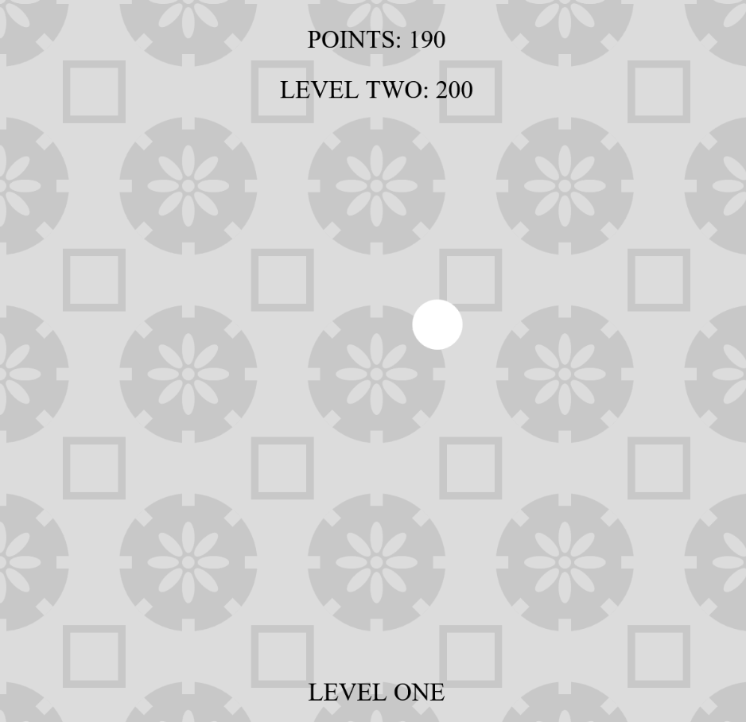

In Chasing Me, Ch s ng Y u, I created an experience which requires the player to shift how they play the game. In the beginning, the player gains points by moving their cursor towards the ball while the ball itself moves towards the cursor. At the same time, points are constantly draining, so the player must outcompete the drain to progress. However, as the player progresses, the environment becomes darker and ashen, eventually signaling that the points system has transformed. By continuing to chase the ball further, the player only loses more and more score. The player has to notice their condition and learn to let the ball chase them.
Chasing Me, Ch s ng Y u replicates a spiritual experience by combining one of the Eight Hot Layers of Buddhist hell, Saṃghāta, and the story of Buddhist monk Śuddhipanthaka. For thousands of years in Saṃghāta, residents are tempted into chasing a figure they can never truly reach while hot swords pierce their body. Yet, I wanted to offer these residents a faster escape from their punishment. Like Śuddhipanthaka who cleans temple floors, the residents too can find enlightenment in their labor and eventually release the karma that ties them to hell.